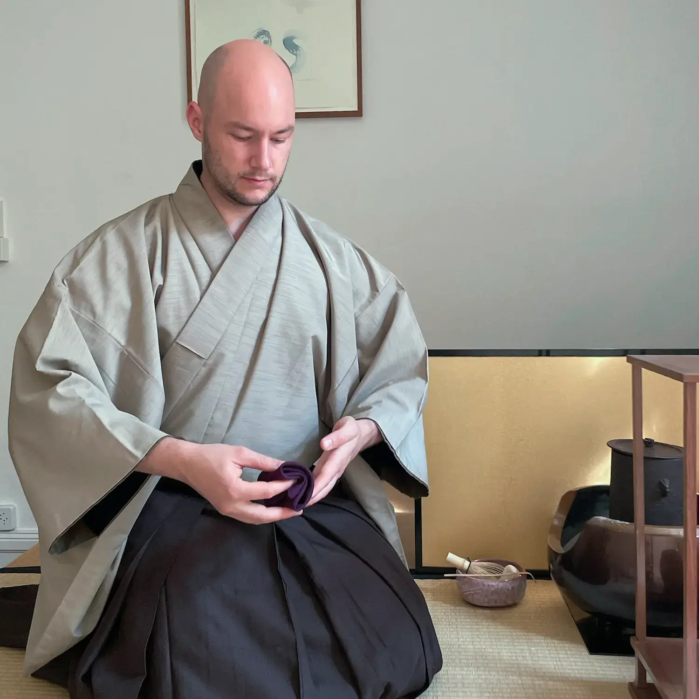

Ich bin ursprünglich ein Barkeeper, der sich auf der Suche nach einer Theorie der Gastfreundschaft dem japanischen Teeritual zugewandt hat. Seit Beginn meiner Ausbildung im Jahr 2015 hatte ich die Gelegenheit, unter verschiedenen 裏千家-Lehrern in Japan und Europa zu studieren. Mein Übungsraum habe ich anfangs nur mit Dingen von IKEA eingerichtet, daher habe ich ihm den Namen 池庵 gegeben. Hier versuche ich, 茶事 zu veranstalten, um mein Verständnis des Tee-Wegs zu vertiefen.
Obwohl ich meine Theorie der Gastfreundschaft noch nicht abgeschlossen habe, fand ich in Tee zwei wichtige Säulen: Bescheidenheit und Vergänglichkeit.
Bescheidenheit als ästhetisches Ideal. Als Gastgeber versuche ich nicht, den Gast zu beeindrucken. Das ist schwierig, denn gleichzeitig möchte man, dass sich die Gäste gut aufgehoben fühlen. Dennoch sollte alles, was ich tue, nur dazu dienen, den Gast sich wohl fühlen zu lassen, nicht um zu zeigen, welche Raffinesse ich haben könnte. Deshalb frage ich mich ständig: Tue ich dies zum Wohl des Gastes oder meines eigenen? Ebenso sollten die Werkzeuge, die wir verwenden, in ihrer Eleganz zurückhaltend sein, damit sie nicht von der Gastfreundschaft ablenken. Wenn sie zu viel Aufmerksamkeit erregen, kann sich der Geist des Gastes nicht beruhigen. Nur wenn der Gast unterhalten werden möchte, sollte deren Raffinesse offensichtlich werden.
Vergänglichkeit bedeutet zu erkennen, dass jeder Moment einzigartig ist und nie wieder auf genau dieselbe Weise passieren wird. Seltene Dinge sind kostbar, daher müssen solch einzigartige Augenblicke von unschätzbarem Wert sein. Gib dem Gast die Möglichkeit, sich vollständig auf das Hier und Jetzt zu konzentrieren, indem du ihn vorübergehend vor den Geistern von gestern und den Sorgen von morgen schützt. In geschmacklichen Angelegenheiten sind die Jahreszeiten und geschmackvolle Zeichen von Gebrauch und Abnutzung entscheidend, da sie dem Gast helfen, sich an diese Vergänglichkeit zu erinnern.
Kontaktieren Sie mich unter nico@hedonisms.ch